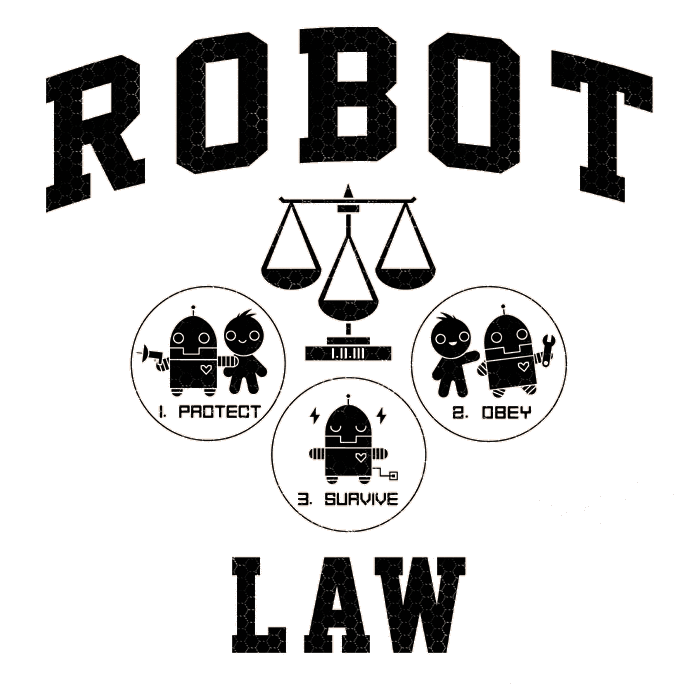

Frameworks for debate:
- Deontological (rule based)
- Consequentialism (utilitarianism)
- Virtue ethics (hybrid)
These frameworks can be implemented with different approaches:
Top down – any approach that takes a specified ethical theory and analyzes its computational requirements to guide
the design of algorithms and subsystems capable of implementing that theory.
Definition IRL: Giving the robot a set of finite rules for which it will obey and adhere to
Bottom up – emphasis placed on creating an environment where an agent explores courses of action and is rewarded
for behavior that is morally praiseworthy. The artificial agent learns through its experience. Ethical principles must be discovered or constructed.
Definition IRL: The robot learns just as a child learns, however at a super-induced rate without forgetting.
Top Down
Set of rules that can be turned into an algorithm. Easy peeasy.
However, various ethical theories are better in specific situations, so giving a robot a general one may work well in one scenario but poorly in another.
Deontological theory/morality are based on following a set of rules, such as:
- Duty based ethics
- Asimov's three laws of robotics:

They are incomplete as they stand. For example, the first law is useless due to ignorance - a robot could harm a human as long as it did not knowingly intend to harm one.
In response for a request for water, it could serve a human bacteria filled water, throw a human down a well, or drown one in a lake..
A possible fix would be to rewrite the first law in “A robot may do nothing that to its knowledge will harm a human being”.
Problem with such a fix – clever criminals could use multiple robots to have one place a stick of dynamite on the ground.
Another push a wick into a piece of insignificant dynamite. And another to light a random wick.
The problem with a deontological approach is that the rules could be followed precisely but still unexpected consequences could arise.
Also, the “degree” of risk comes into play that produces a problem for solely rule based ethical frameworks.
Should a robot stop a human doctor from interacting with an xray since technically there is a risk for cancer?
A solution would be to take away part of the first law, requiring the robot to simply not harm humans
(impossible to implement on robots dedicated to military operations) but then by INACTION it could witness a noncombatant walk into
the line of fire and not stop them because they're not strictly required to act.
Another possible fix to Asimov's laws would be through the addition of a "Zeroth" law that takes precedence over the other three.
The Zeroth law would require robot to not harm all humanity, or allow humanity to come to harm. This allows a robot to harm an individual
if it saves another from an existential threat.
Other laws have been added to try and fix the debacle: a fourth law stating that the robot must establish its identity as a robot.
FURTHER PROBLEMS with strictly using rule based ethics:
How would a robot identify a surgeon wielding a scalpel over a wounded combatant vs an enemy holding a knife?
The Robot would then need to understand “context” "exceptions to rules”, all of which would require constant updates regularly.
The robot becomes a part of the "slave mentality": a robot strictly acting by a set of rules isn't making ethical decisions, rather carrying out
ethical decisions of their commanders.
Deontological approaches maintain that rules must be followed regardless of consequences.
Utilitarianism – consequence based (SPOILER: it fails miserably to be used for an ethical framework).
It proposes that a robotic agent should calculate the odds of a given scenario and choose the greater good...
Solely using this framework is terrible. If the scenario is incalculable the entire framework unravels. And... to what degree should the greater good
be followed? For example, how about executing one person to stop a riot that could cause further economic damage?
Both approaches, Deontological and Utilitarian, fail in solely using top down ethical framework because the computational loads are insurmountable.
It’s impossible to foresee – and then code for – every possible situation in any scenario.
This framework alone fails.
Bottom Up
Alan Turing was the first to approach the idea that the learning process of an AI should mimic that of children.
In this way, experience builds decision patterns and influences the decisions they make. This "dynamic morality"
facilitates varied responses based on the ongoing feedback from different mechanisms.
WEAKNESSES:
Not knowing which goals to use for evaluating choices
Works best when AIs are directed at achieving one clear goal
Fails when the goal is incomplete or poorly defined
The bottom up frameworks fails as well, but what about a...
C-C-C-COMBO!
Combining the top down with the bottom up into a hybrid ethical framework produces virtue ethics.
Virtue Ethics
Using the bottom up approach shaped by evolution and learning top down criteria for reasoning about ethical challenges.
Not “what should I do in this situation” but rather “what type of character do I want this agent to have – virtue or vice?”
Ones actions do not constitute ones morality but rather reveal it. An hypothetical imperative link - good means to good ends.
Virtues are role dependent a fireman's virtues differ greatly from those of a salesman.
Top Down
Determine how to represent virtuous patterns and motivations for the robot and how the system would determine which virtue or action representing
the virtue should be called upon in a particular situation.
Virtues in humans are linked to emotional motivation – thus would the robot need to develop or be given emotions?
Bottom Up
Through the gradual accumulation of data the network (robot brain – mainframe – database of virtues) develops generalized responses that go beyond
the particulars of which it was trained.
Combination of bottom up and top down to create virtue ethics
A way to both evaluate the actions of one, and as a vehicle for providing rational explanations of the behavior.
Some top-down rules are combined with machine learning to best approximate the ways in which humans actually gain ethical expertise.
Learning through peer interaction will be a large part of the developing of virtues – thus we need be concerned with WHO they're interacting with.
Pros/Cons for utilizing autonomous robots:
PRO: Systems with limited moral decision making abilities are more desirable than 'ethically blind' systems due to a decrease in negative decisions possible.
CON: Robots will allow political leaders to choose war as a more casual option to conflict since human casualties could potentially be lessened....for one side at least.
PRO: Robots must use proportionality. To drive an enemy from a hillside it must decide to use artillery shells instead of a nuclear bomb. But once this proportionality is learned and calculated time and time again they will be more accurate in future situations.
CON: The discrimination between a combatant and noncombatant (thanks ISIS...) is not as trivial as back in 1942 when anyone with a swastika and a grey uniform was the enemy (assuming you were not on the axis's side)
PRO: Robots would be more accurate and efficient. Example is the predator UAV drone. It cannot fire until a human controller has targeted solely a combatant target and pushed a button.
But the lag between the pulling of a trigger and the weapon actually firing (even though it could be a few milliseconds), as well as the electromagnetic
connections between the remote controller and the weapon means that even if the target is 100% in site at the time of weapon execution, the actual firing
might be off by a slight bit, which isn't a problem when the weapon is a bomb and the target is in the middle of a desert, but what about a target in a city?
- Thus a sufficiently autonomous robot that could fire the moment it acquires the target directly, instead of waiting for a command would be more effective in unintended deaths.
PRO: Robots programmed to never break the LOW (Laws of War) will refuse immoral orders, as opposed to human soldiers who are trained to unfailingly follow orders with no personal input.